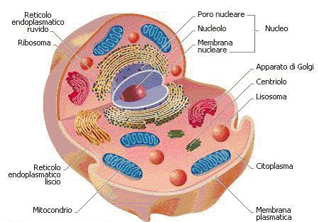

- di Silvia Barbieri -
La cellula animale è la più piccola componente dell’organismo animale a possedere tutte le caratteristiche proprie della vita stessa. É separata dal mondo esterno dalla membrana cellulare, formata da un doppio strato di fosfolipidi. È dotata di un flagello: una struttura che permette il movimento ed è indispensabile per gli eucarioti a vita libera. All’interno troviamo il citosol o il citoplasma: un liquido viscoso, formato da acqua, sali minerali e sostanze organiche. In esso si trovano dispersi gli organuli in cui avvengono processi essenziali alla vita della cellula. Gli organuli sono: - Apparato di Golgi: è un organulo che svolge un ruolo essenziale per la formazione dei lisosomi. È costituito da un insieme di sacche e vescicole che raccolgono e trasportano diverse sostanze. - Mitocondri: trasportano energia, producono ATP e contengono i centrioli. - Centrioli: coppie di organelli che svolgono funzioni essenziali durante la mitosi. - Nucleo: contiene il DNA (che porta le informazioni ereditarie e si trova disperso nel nucleo sotto forma di cromatina, essa prima della divisione cellulare si addensa formando i cromosomi, ovvero strutture più compatte). Il nucleo presenta il reticolo endoplasmatico ruvido (chiamato in questo modo per la presenza di ribosomi nella parte esterna della membrana) e ha il ruolo di sintetizzare le proteine. Inoltre c’è un secondo reticolo endoplasmatico, detto liscio (per la mancanza di ribosomi sulle sue membrane),che ha la funzione di sintetizzare i lipidi cellulari. La parte più interna è chiamata Nucleolo dove avviene la sintesi del RNA - Ribosomi: hanno il compito di assemblare le proteine. Formano amminoacidi necessari alla sintesi di una nuova proteina. - Lisosomi: sono presenti solamente nelle cellule animali e demoliscono molte molecole, liberando i monomeri che le costituiscono.
